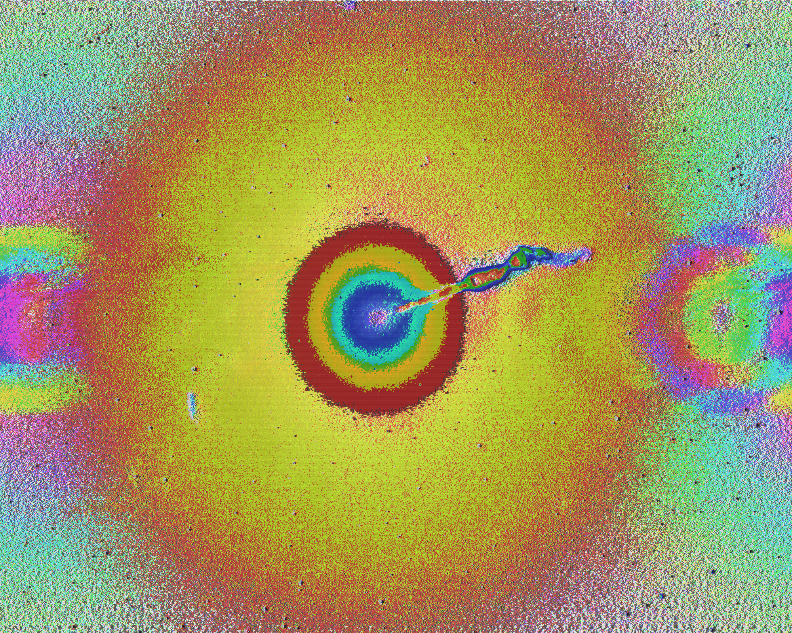

Glitch Art


I call this series "Birthday Stars," where I used images taken by the Hubble telescope on my birthday (you can see on the "Hubble Birthday AppLinks to an external site."). Images taken of space are tricky; not only is it a tedious and careful process, but as our technology also develops, all the images will look different. Almost makes you wonder, "Which one is the real one?". Each camera can capture the planets or activities in space differently, depending on the camera's technical capabilities. Using these glitches, we can see these images in a new light. While some may be subtle, each picture tells us something new about how space moves or its energy. .